Rendering
Rendering in PyTVPaint¶
PyTVPaint can render a clip or a Project using the render functions, here is a basic example of how to use it
from pytvpaint.project import Project
from pytvpaint.clip import Clip
# to render a project
project = Project.current_project()
project.render("./out.#.png", start=0, end=67)
# to render a clip
clip = Clip.current_clip()
clip.render("./out.#.png", start=10, end=22)
Warning
For more details on how we handle frame ranges in the projects and clips, please check the sections below, which go into detail about how TVPaint handles ranges and how we changed it to fit our needs.
Sequence parsing with Fileseq¶
When providing an output path to our functions, we use the handy Python library Fileseq for parsing and handling the expected frame ranges, which means you can use frame range expressions when rendering a clip or a project.
For example, you can use:
from pytvpaint.clip import Clip
clip = Clip.current_clip()
clip.render("./out.10-22#.png")
# This will render a sequence of (10-22) like so out.0010.png, out.0011.png, ..., out.0022.png
# This is the same as doing
clip.render("./out.#.png", start=10, end=22)
Understanding TVPaint's frame ranges and timelines¶
Handling frame ranges in TVPaint can be difficult, depending on the object (Project, Clip, Layer) and on the mark in/out, range values tend to change and are seemingly handled differently between the UI and the code.
PyTVPaint handles frames differently in an effort to have a similar behaviour to the other industry software we're familiar with (Premiere, Maya, etc...). Meaning that the ranges provided to the API will have to be formatted a certain way, with the API handling all the appropriate range conversion behind the scenes.
To explain how this works we first need to review how TVPaint handles ranges (grab a cup coffee, this might take a while...).
Info
Since the George documentation can be sometimes lacking in detail, all the explanations below are infered from our tests and might be wrong in some aspects, please take this all with a grain of salt.
First let's start by reviewing the two main functions used for rendering in TVPaint.
For the sake of brevity, we will ignore the other rendering functions like tv_SaveDisplay
as these have no range selection options. We will also ignore all the clip export functions (JSON, Flix, etc...) as these behave in the
same way as tv_SaveSequence (which we will review below) when handling ranges.
| Method | Description | Can Render Camera |
|---|---|---|
tv_ProjectSaveSequence |
Renders a project | True |
tv_SaveSequence |
Renders a clip | False |
Setup¶
Let's start with a simple example. A Project that contains a single clip which in turn contains a single Layer. The layer has a single instance with a length of 10 frames and starts at the clip start. Finally, let's also set the project start frame at 0
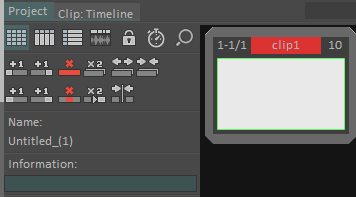
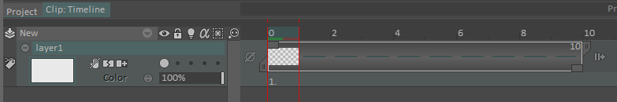
Let's also switch to the timeline view in the project
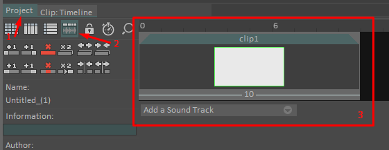
We now have a project with a range of (0-10), a clip clip1 with a range of (0-10) and finally a layer layer1 also with a range of (0-10).
So far so good.
Note
We're ignoring the Scene objects in these examples since they do not really impact the frame range.
Testing and rendering examples¶
If we want to render clip1 we could do this :
from pytvpaint import george
# render the clip
george.tv_save_sequence('out.#.png', 0, 10)
# or render the project
george.tv_project_save_sequence('out.#.png', start=0, end=10)
These will all work and render our sequence of (0-10) frames. Let's go a bit further now and change the start frame to 53
(figure 4). Our project timeline and clip range are shown as starting at 53 in the UI, (see figures 5 and 6).
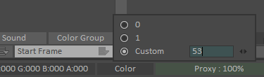
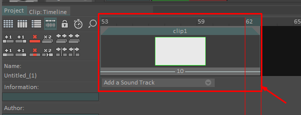
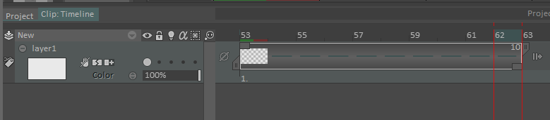
You would assume that rendering our sequence again would mean us using our new range (53-62) like this :
# render clip new range
george.tv_save_sequence('out.#.png', 53, 62)
# or render the project
george.tv_project_save_sequence('out.#.png', start=53, end=62)
this works...kind of, we'll get back to this later. For now, we do end up with a sequence of 10 frames (53-62).
Again, let's go further and move the first image in the layer one frame to the right. Let's also add a mark in and out
to our clip at (55, 60) like shown below.
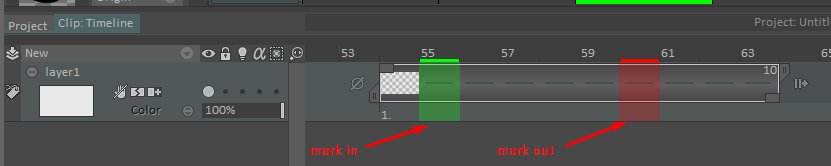
So now our project still has one clip but with a range (53-63) and one layer with a new range as well (54-63) since we moved it
one frame to the left.
If we render this again just like we did above, we start to see some inconsistencies.
george.tv_save_sequence('out.#.png', 53, 63)
# => renders a sequence of 11 frames with a range of (53-63)
george.tv_project_save_sequence('out.#.png', start=53, end=63)
# ERROR : only renders 6 frames
It seems rendering the project yields only 6 frames instead of our new range of 11 frames (53-63). No matter,
rendering the clip seems to work, so let's just only use tv_save_sequence from now on !...Well, it turns out rendering
the clip doesn't work either. We do end up with the number of frames we asked for, but we've actually been rendering
the wrong frames ever since we changed the project's start frame to 53. So let's set the project's start frame back to
0 and try to render again, like so :
# reset the project start frame
p.start_frame = 0
george.tv_save_sequence('out.#.png', 0, 11)
# => renders a sequence of 11 frames with our updated range of (0-11)
george.tv_project_save_sequence('out.#.png', start=53, end=63)
# ERROR : only renders 6 frames
Somehow we still end up with missing frames even tough we reverted to the previous project start frame, so what's happening ?
Understanding TVPaint's timeline¶
To understand what's happening we need to understand how TVPaint handles its timeline...and the answer is that it doesn't
really handle a timeline. TVPaint's elements are handled more like lists than anything else, so all elements start at 0
and have a range of (0 to N), however there are really two lists; projects have their timeline/list and clips also have
their own timeline/list that is connected to the project's timeline. So to recap:
- Clip: a clip's timeline always starts at 0 and goes to N, N being the last image in the "longest" layer in the clip.
- Project: a project's timeline always starts at 0 and goes to N, N being the last frame in the last clip of the project.
- Layer : layers use the same timeline as their parent clip.
Many things can affect these timelines and change the way we have to provide the rendering range to TVPaint. In the sections below, we will go over these timeline changing elements.
Project Start Frame¶
Changing the project's start frame actually doesn't change the previously mentioned lists, they still start at 0, it's just the TVPaint UI showing the timeline with an added 53 (again figures 4 and 5 in sections above), which can be pretty misleading (as seen in the example above).
So this explains why the images we rendered in our very first example were correct but not the ones after we changed the project's start frame. So to correct our second example, we'd need to subtract the project's start frame from the range we want to render, like so :
p_start = 53
start, end = (53, 63)
# clean range before render
start = (start - p_start) # 0
end = (end - p_start) # 10
george.tv_save_sequence('out.#.png', start, end)
# => renders a correct sequence of 11 frames with a range of (53-63) (as seen in the timeline in the Clip's UI)
george.tv_project_save_sequence('out.#.png', start=start, end=end)
# ERROR : only renders 6 frames corresponding to the range (53-58) (as seen in the timeline in the Project's UI)
Except we kind of tried this already when we reverted the project start frame to 0, and it still doesn't work, with
tv_project_save_sequence only rendering 6 frames.
Mark IN/OUT¶
The reason the project has only been rendering 6 frames is because we set a mark IN and OUT on the clip at (55-60).
This means that the project now only sees the frames between the mark IN and OUT (see figures 8 and 9 below). If we had only set the mark
IN but not the mark OUT, the project would see all the frames between the mark IN and the clip's end frame and vice versa.
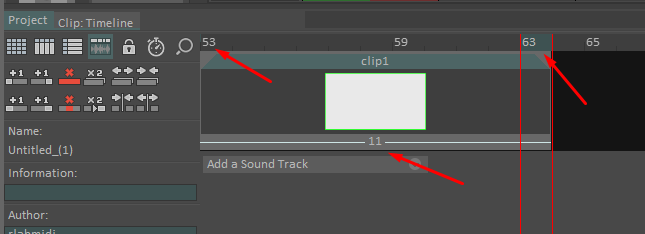
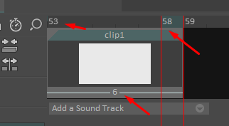
So this explains why we only had 6 frames rendered, since the duration of the range (55-60) is equal to 6 frames.
You probably noticed that there is still an issue. The project now says it's range is (53-59) (figure 9 above) while the clip
says it's range (when taking the Mark IN/OUT into account) is at (55-60) and it's full range is (without mark IN/OUT) is (53-63) (figure 7 above)
This is not a bug, when you take into account the fact that the project's timeline is separate from the clip timeline and ignores the frames outside the Mark IN/OUT it starts to make sense.
We know the project start frame is ignored by the George rendering functions (as mentioned above) and all timelines (project and clip)
really start a 0. So our project would only see 6 frames in the clip (the one between Mark IN 55 and the Mark OUT 60),
the project's timeline is really (0-5) + the project start frame 53 and we get (53-58).
So to fix our previous example and render our clip from the project we would need to do this
p_start = 53
start, end = (53, 63)
# clean range before render
start = (start - p_start) # 0
end = (end - p_start) # 10
mark_in, mark_out = (55, 60)
# clean mark IN/OUT range before render
mark_in = (mark_in - p_start) # 2
mark_out = (mark_out - p_start) # 7
george.tv_save_sequence('out.#.png', start, end)
# => renders a correct sequence of 11 frames with a range of (53-63) (as seen in the timeline in the Clip's UI)
george.tv_save_sequence('out.#.png', mark_in, mark_out)
# => renders a correct sequence of 6 frames with a range of (55-50) (as seen in the timeline in the Clip's UI)
render_duration = (mark_in - mark_out) + 1 # 6
george.tv_project_save_sequence('out.#.png', start=0, end=render_duration)
# => renders a correct sequence of 6 frames with a range of (53-58) (as seen in the timeline in the Project's UI)
Note
Just like Clips, Projects can also have a Mark IN/OUT separate from the clip's, however the project's Mark IN/OUT do not affect the timeline, so we can ignore them.
Tip
This is also the way you set the Mark IN/OUT, current frame, JSON exports, etc... in Clips and Project
We now have a correct way to render our clip from the clip and the project, great ! But we're not done yet, what if we have multiple clips.
Multiple Clips¶
We figured out how to handle ranges when rendering a clip using tv_save_sequence. We also figured out how to render
a project with one clip correctly.
Now let's add another clip to the project, we'll place it after our first clip and call it clip2. Add a single
layer layer2 to it with 5 frames so a range of (0-4) for the clip and layer or (53-57) as shown in the UI (see figure 10 below)
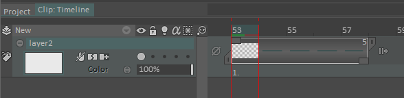
From our tests earlier, we know that the new clip should show up in the project's timeline after the first one so
at (59-63) as shown in the UI (see figure 11 below) or more accurately at (6-10) if we see them as list indices.
And that's exactly what we're getting.
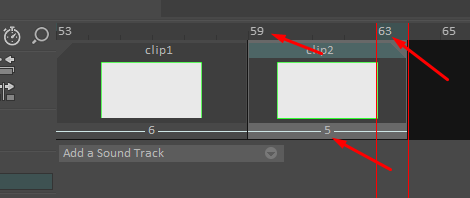
So if we want to render the new clip we would do :
# rendering from the clip, using the clip's timeline
george.tv_save_sequence('out.#.png', 0, 4)
# => renders a correct sequence of 5 frames with a range of (53-57) (as seen in the timeline in the Clip's UI)
# rendering from the project, using the project's timeline
george.tv_project_save_sequence('out.#.png', start=6, end=10)
# => renders a correct sequence of 6 frames with a range of (59-63) (as seen in the timeline in the Project's UI)
Rendering the camera¶
Tip
Rendering the camera does not affect the timeline, however only tv_project_save_sequence has an option to render the
camera. So you'll have to use the project and it's range to render any frames with the camera.
Invalid Ranges¶
An invalid range can be provided to both functions and instead of raising an error, both will render some frames. Here we will try to describe the observed behavior when encountering an invalid range.
Info
A rendering range is considered invalid if it starts before the Project's or Clip's start frame and ends after the Project's or Clip's end frame
For a project using tv_project_save_sequence
| Range Error | Renders |
|---|---|
| range starts before the project's start frame | Renders all images in the project |
| range ends after the project's end frame | Renders all images in the project |
For a clip using tv_save_sequence
| Range Error | Renders |
|---|---|
| range starts before the clip's start frame | Renders all images, images will be empty if outside of clip range |
| range ends after the clip's end frame | Renders all images, images will be empty if outside of clip range |
| range start is equal to clip's start frame but range ends after the clip's end frame | Renders the clip's range only, anything outside the clip's range is not rendered |
| range start is different from clip's start frame and range ends before, at or after the clip's end frame | Renders the clip's range only, images will be empty if outside of clip range |
| range start and end are both inferior to clip's start frame | Renders the clip's range only, anything outside the clip's range is not rendered |
How PyTVPaint handles a frame range¶
We it comes to our API, we take a very what you see is what you get approach when handling the timeline. Basically if timeline in the UI says
that your clip's range is (55-60) (as seen in the examples above) then that is what you should provide to our functions.
PyTVPaint will handle the range conversion behind the scenes.
from pytvpaint.clip import Clip
c = Clip.current_clip()
c.render('out.#.png', 55, 60)
# or render using the camera
c.render('out.#.png', 55, 60, use_camera=True)
# or when using FileSequence expressions
c.render('out.55-60#.png', use_camera=True)
# => renders a correct sequence of 6 frames with a range of (55, 60) (as seen in the timeline in the Clip's UI)
# we could also do this
c.render('out.#.png', c.start, c.end)
For the second clip, and it's range of (53-57), we would render it this way:
from pytvpaint.clip import Clip
c2 = Clip.current_clip()
c2.render('out.#.png', 53, 57)
# or when using FileSequence expressions
c2.render('out.53-57#.png')
# => renders a correct sequence of 5 frames with a range of (53, 57) (as seen in the timeline in the Clip's UI)
if we need to render the project, or part of it, let's say the second clip, which has a range of (59-63) in the
project's timeline (see figure 11 above)
from pytvpaint.project import Project
p = Project.current_project()
p.render('out.#.png', 59, 63)
# or render using the camera
p.render('out.#.png', 59, 63, use_camera=True)
# => renders a correct sequence of 5 frames with a range of (59, 63) (as seen in the timeline in the project's UI)
# we can also use the clip's properties to get its range in the project's timeline
c2 = p.get_clip(by_name="clip2")
print(c2.timeline_start) # => 59
print(c2.timeline_end) # => 63
Success
This is also the way you provide ranges and frames to all our API's functions. So when setting the current frame, the Mark IN/OUT etc... remember to base your range on the UI.
Warning
PyTVPaint uses tv_project_save_sequence to render frames for the project and the clips, this means that when
rendering a clip, it will consider any range outside the clip's Mark IN/OUT (if they have been set) as invalid.
Warning
Unlike TVPaint, PyTVPaint will raise a ValueError when provided with an invalid range. If you'd like to render an
invalid range anyways, then consider using these wrapped functions directly (george.tv_project_save_sequence
, george.tv_save_sequence). This also means that you will have to do the range conversions yourself, as shown
in the examples above.
Warning
Even tough pytvpaint does a pretty good job of correcting the frame ranges for rendering, we're still encountering some weird edge cases where TVPaint will consider the range invalid for seemingly no reason.